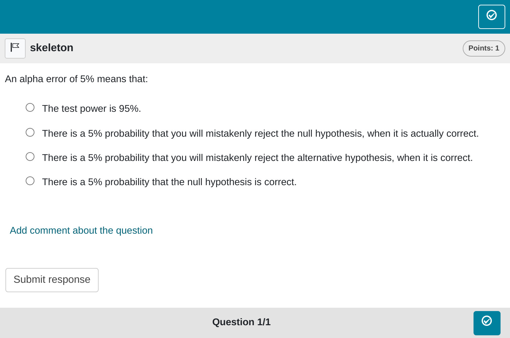

Please be aware that this is the inaugural article in our package, and consequently, it may exhibit more verbosity than subsequent articles. We aim to highlight crucial points that might not be as explicitly addressed in other articles. Therefore, we suggest thoroughly reading through this article once before proceeding to the exercise types that pique your specific interest.
Minimum version
The simplest exercise type in the rqti package is single choice. A
template is automatically created when you initiate an rqti project
through RStudio. Alternatively, it can be added by clicking on
New file -> R Markdown -> From Template. The
rqti templates start with rqti: Here we look
at the templates rqti: singlechoice (simple) and
rqti: singlechoice (complex).
The minimum you need to provide is the type: sc (or the
equivalent type: singlechoice, or
type: schoice) in the yaml-section and a list with at least
two elements in a section called # question:
---
type: sc
knit: rqti::render_qtijs
---
# question
An alpha error of 5% means that:
- There is a 5% probability that you will mistakenly reject the null hypothesis, when it is actually correct. <!-- First option is treated as the correct one by default. -->
- There is a 5% probability that the null hypothesis is correct.
- There is a 5% probability that you will mistakenly reject the alternative hypothesis, when it is correct.
- The test power is 95%.
# feedback
The correct interpretation is:
There is a 5% probability that you will mistakenly reject the null hypothesis, when it is correct.
This is based on the typical understanding of a 5% significance level in hypothesis testing, which means that you are willing to accept a 5% chance of making a Type I error.Note that in this example, a feedback section was also provided. This is optional, but usually it is a good idea to give some explanation for students.
Further note that the knit parameter is set to a custom
rqti function, which will handle the preview. This is not
necessarily required, but simplifies the workflow substantially. If you
leave it out, the default preview is just an html file. If you add our
knit function, you will get a more realistic preview.
To see what the final result might look like in a learning management
system you can just click the Knit button in RStudio. This
will produce an rqti xml file and render it in the viewer pane via QTIJS
(you can also just fire up the displayed server url in the browser if
you do not use RStudio).
The corresponding xml file is created in the same folder as the Rmd file if you click the Knit-Button.
Many learning management systems can directly import a QTI-xml-file, so all you need to do is upload the generated file. Compositions of exercises are covered in the article: sections and tests.
If you happen to use OPAL/ONYX, you can also upload your exercises with the knit parameter directly:
knit: render_opalThis will upload the file and open a browser with the opal url. It should look like this:

Setting up OPAL requires some additional steps, which are covered in the article: Setting up OPAL.
By default the rights of the uploaded material in OPAL are set to public, so no authentication is required to view the material. Otherwise you have to login into OPAL, which will log you out in the API. Please take this into account when testing your material. Without changing the defaults anyone with the link has access to your exercise.
Syntax explained
Let us have a closer look at the input file.
---
type: sc
knit: rqti::render_qtijs
---
# question
An alpha error of 5% means that:
- There is a 5% probability that you will mistakenly reject the null hypothesis, when it is actually correct. <!-- First option is treated as the correct one by default. -->
- There is a 5% probability that the null hypothesis is correct.
- There is a 5% probability that you will mistakenly reject the alternative hypothesis, when it is correct.
- The test power is 95%.
# feedback
The correct interpretation is:
There is a 5% probability that you will mistakenly reject the null hypothesis, when it is correct.
This is based on the typical understanding of a 5% significance level in hypothesis testing, which means that you are willing to accept a 5% chance of making a Type I error.Note that you do not necessarily need to specify which list element is correct. The first one is treated as the correct one, which is a useful shortcut. If you communicate this to your collaborators, it is also much easier to read. They do not need to look anywhere else in the file for checking the correct answer.
Of course you can specify the correct choice if need be. Our preferred way of doing this is by putting asterisks around this option. For instance:
Once again, this is much easier to read than providing the solution somewhere else (e.g. in the yaml section). Furthermore, producing a preview as html directly shows you which element is correct.1
An important note: Do not forget to put a blank line before your question and the answer list, otherwise the list will not be a proper list:
Renders as:
A question text that is not separated by a blank line - A - B - C - D
More control
If you want to have more fine-grained control, consider the RMD
template rqti: singlechoice-complex, which uses more yaml
attributes. In addition you can also set feedback for correct and
incorrect responses.
---
type: sc # equivalent to singlechoice and schoice
knit: rqti::render_qtijs # if you do not want our preview renderer, remove this
identifier: sc001 # think twice about this id for later data analysis!
title: A meaningful title that can be displayed in the LMS
shuffle: false # random order of choices
orientation: horizontal # OR horizontal
points: 0.5
calculator: scientific # OPAL specific attribute
files: attachment.pdf # OPAL scpecific attribute
---
# question
Which version of the QTI standard is used by the R package rqti?
- 1.2
- *2.1* <!--Mark correct solution with asterisks-->
- 2.2
- 3.0
# feedback+
Nice. (Only displayed when the solution is correct.)
# feedback-
Try again. (Only displayed if the solution is not correct.)
<!-- If you prefer general feedback, just use the the section # feedback and delete the other feedback sections-->Which renders in OPAL as:

Let us now discuss all yaml attributes that can be used
yaml attributes
type
Has to be singlechoice or sc (a shortcut
for singlechoice) or schoice (compatible with
exams package)
identifier
This is the ID of the exercise, useful for later data analysis of results. The default is the file name. If you are doing extensive data analysis later on, it makes sense to specify a meaningful identifier. In all other cases, the file name should be fine.
title
Title of the exercise. Can be displayed to students depending on the learning management system settings. Default is the file name.
shuffle
If true (the default), randomizes the order of the
choices. Only in rare occasions it makes sense to have a strict order of
choices (setting shuffle to false).
Feedback
Feedback can be provided with the section
- # feedback (general feedback, displayed every time, without conditions)
- # feedback+ (only provided if student reaches all points)
- # feedback- (only provided if student does not reach all points)
We typically prefer providing comprehensive feedback rather than
conditional feedback. Basically, we never use feedback+ and feedback-.
It is often more effective to present the entire solution, organized
into manageable chunks that users can expand or collapse, such as HTML
elements with <details> and
<summary> tags.
List of answers as a variable
For more complex exercises the list of answers is often just
available as a variable. In this case you can use the helper function
mdlist to convert the vector into a markdown list:
Some advice on single choice exercises
From a psychometric perspective single choice exercises are the worst option for ability assessment. This is mainly because guessing can never be ruled out. Psychometric properties will usually be worse than for gap exercises that are similar in content.
In an alternative R package designed for test creation, namely
exams, numerous instances demonstrate the transformation of
numeric gaps into single-choice exercises. In our perspective, this
approach is justified only in scenarios where the learning management
system lacks support for gap exercises, exhibits poor support, or
demands a print exam with automated grading. In all other cases, opting
for numeric (or string) gaps would generally yield more effective
exercises.
Certain situations necessitate the use of single-choice exercises. For example, when addressing the level of measurement, there are only five options (nominal, ordinal, interval, ratio, absolute). In such cases, we advise posing multiple questions instead of a single one. Additionally, it could be beneficial to assign fewer points to single-choice exercises overall to mitigate the impact of guessing and minimize variance.
If you have several single choice exercises where the answer options stay the same, consider using a match table instead: Match Tables
In conclusion, it is advisable to steer clear of single-choice exercises whenever possible. Specifically, refrain from converting numeric gap exercises into single-choice format unless there is a compelling reason to do so. If the use of single-choice exercises is unavoidable, opt for posing multiple questions, perhaps utilizing a match table. Additionally, contemplating a reduced weight for single-choice exercises in grading can contribute to a more balanced assessment.